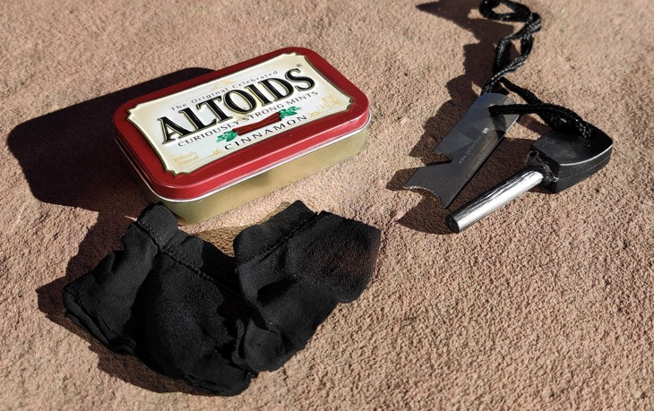
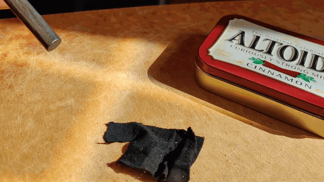
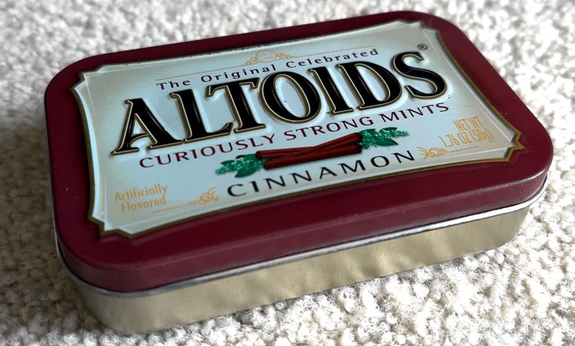
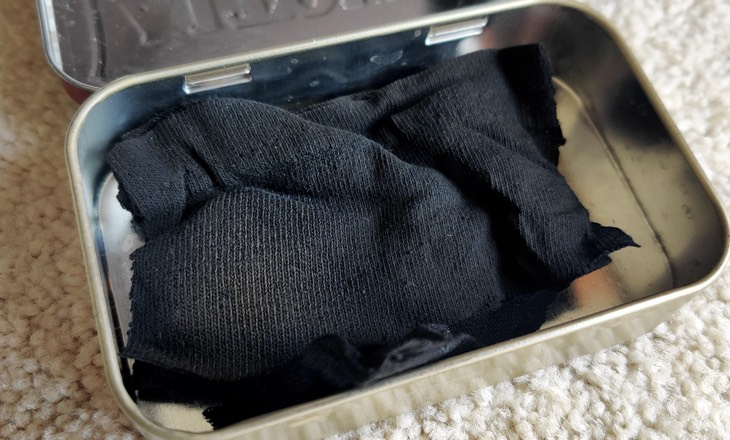
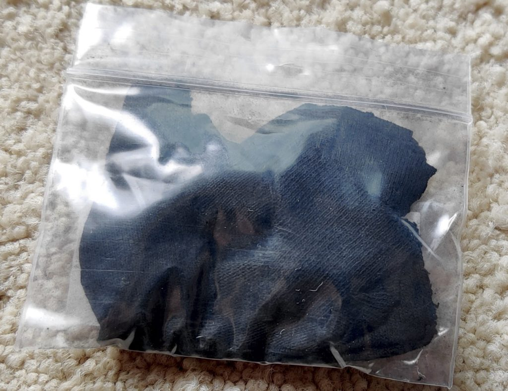

Making char cloth
You can make a char cloth or charcoal very easily. All you need is a metal container with a lid and a fire. Poke a small hole in the lid and put your cotton cloth or small piece of punky wood in the container, close the lid, and put it in the fire. After about 10 minutes you should have a piece of char cloth or charcoal that takes a spark very easily and is the basic component of a fire. Store your firemaking material in a dry place and you will be able to start a fire anytime.
Char cloth is a source of tinder that has been around for over 500 years. This dark, carbonized material can easily catch a spark or small flame, and lets you grow that into a big enough flame to light the larger pieces that make up the foundation of our fire (i.e. the kindling).
You create char cloth by placing natural materials such as cotton, linen, or jute in an almost airtight container and then heating it slowly and steadily over a long period of time. The cloth then goes through a process of thermal decomposition where all that remains is carbon. This carbon that remains catches a spark easily and burns slow, which can then be taken to a tinder bundle and spread to make a larger fire.
You won’t find char cloth at your local Walmart, but is easy and cheap enough to make at home if you want to try it out.
Making char cloth in three steps
First, place some pieces of 100% cotton fabric like from an old t-shirt, denim, cotton balls, or cotton rounds into a metal tin with a lid that is almost airtight. An Altoids mint tin or a tuna can are both popular options. Don’t pack too tightly or it may not char all the way.
Although it isn’t necessary, I next like to punch a hole in the top of the tin to act as a vent. This vent will expel smoke. The smoke will probably catch fire and look like a little burning torch.
Finally, place your tin into the coals of a campfire, over a camp stove, or in your BBQ grill. It takes 15-30 minutes in the fire, but once that flame goes out and no more smoke is being released through that vent hole, your char cloth is ready. Pull the tin out with some tongs or a stick, and let it cool down before opening.
Note: This same process is how you can make charcoal. You would just need a larger container like a paint can, put in some sticks, poke a hole in the top of the can and place it in the fire. Once the flame and smoke stops coming out of the vent hole in your paint can, you have perfectly made pieces of charcoal. Grind up these sticks into a fine powder and you can use it in many ways like part of your DIY water filter.
What to watch out for
One of the downsides of char cloth is that it is extremely fragile because most of your previous material is burnt off and only a carbon structural form remains. Woven materials like denim are supposed to be slightly more durable than just a cotton t-shirt.
If char cloth gets wet, it deteriorates into unusable pieces immediately. Keeping it in another metal tin can help prevent it from getting crushed or wet.
